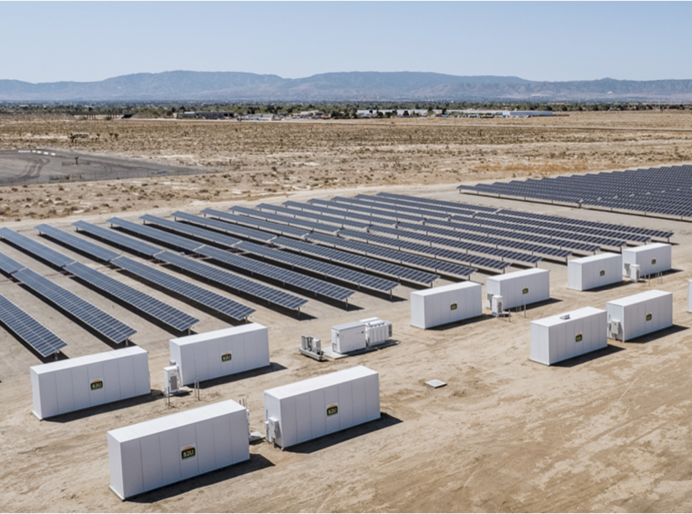

Dando outra vida às baterias
Na Boltz, acreditamos no reaproveitamento sustentável das baterias. Após sua vida útil nos veículos, elas são usadas para armazenar energia de geradores, alimentar outros veículos e até mesmo como solução de armazenamento doméstico.

Como reciclamos nossas baterias
Utilizamos a pirometalurgia e a hidrometalurgia para extrair e reutilizar metais preciosos, reduzindo o impacto ambiental e garantindo a sustentabilidade.